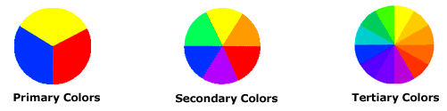

Intro to Color Theory
By Karen Kavett
Published on Jan 31, 2011
By Karen Kavett
Published on Jan 31, 2011

Karen has covered a very good range of basic knowledge on color. Color theory encompasses a multitude of definitions, concepts and design applications - enough to fill several encyclopedias. However, there are three basic categories of color theory that are logical and useful : The color wheel, color harmony, and the context of how colors are used.
Color theories create a logical structure for color. For example, if we have an assortment of fruits and vegetables, we can organize them by color and place them on a circle that shows the colors in relation to each other.
A color circle, based on red, yellow and blue, is traditional in the field of art. Sir Isaac Newton developed the first circular diagram of colors in 1666. Since then, scientists and artists have studied and designed numerous variations of this concept. Differences of opinion about the validity of one format over another continue to provoke debate. In reality, any color circle or color wheel which presents a logically arranged sequence of pure hues has merit.
There are also definitions (or categories) of colors based on the color wheel. We begin with a 3-part color wheel.
Primary Colors: Red, yellow and blue In traditional color theory (used in paint and pigments), primary colors are the 3 pigment colors that can not be mixed or formed by any combination of other colors. All other colors are derived from these 3 hues.
Secondary Colors: Green, orange and purple These are the colors formed by mixing the primary colors.
Tertiary Colors: Yellow-orange, red-orange, red-purple, blue-purple, blue-green & yellow-green These are the colors formed by mixing a primary and a secondary color. That's why the hue is a two word name, such as blue-green, red-violet, and yellow-orange.
Harmony can be defined as a pleasing arrangement of parts, whether it be music, poetry, color, or even an ice cream sundae.
In visual experiences, harmony is something that is pleasing to the eye. It engages the viewer and it creates an inner sense of order, a balance in the visual experience. When something is not harmonious, it's either boring or chaotic. At one extreme is a visual experience that is so bland that the viewer is not engaged. The human brain will reject under-stimulating information. At the other extreme is a visual experience that is so overdone, so chaotic that the viewer can't stand to look at it. The human brain rejects what it can not organize, what it can not understand. The visual task requires that we present a logical structure. Color harmony delivers visual interest and a sense of order.